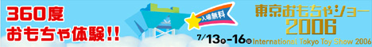

| ＜HOME |
|  |
招待状をご希望の方は、下記「来場者登録証」ＰＤＦファイルより印刷の後、必要事項を御記入の上、名刺２枚を添えて会場受付へ御提示ください。 尚、招待状をお持ちでない場合でも、商談でお越しになる場合は、受付で登録手続きを行ったうえでご入場いただけます。 但し、７月１３日（木）・１４日（金）は、商談見本市のため、一般の方（学生を含む）及びお子様連れでの御入場はできませんので、予め御了承ください。 ※７月１５日（土）、１６日（日）は、一般公開日ですので、招待状は必要ありません。 ・来場者登録証（PDFファイル） ・ご案内（PDFファイル） |